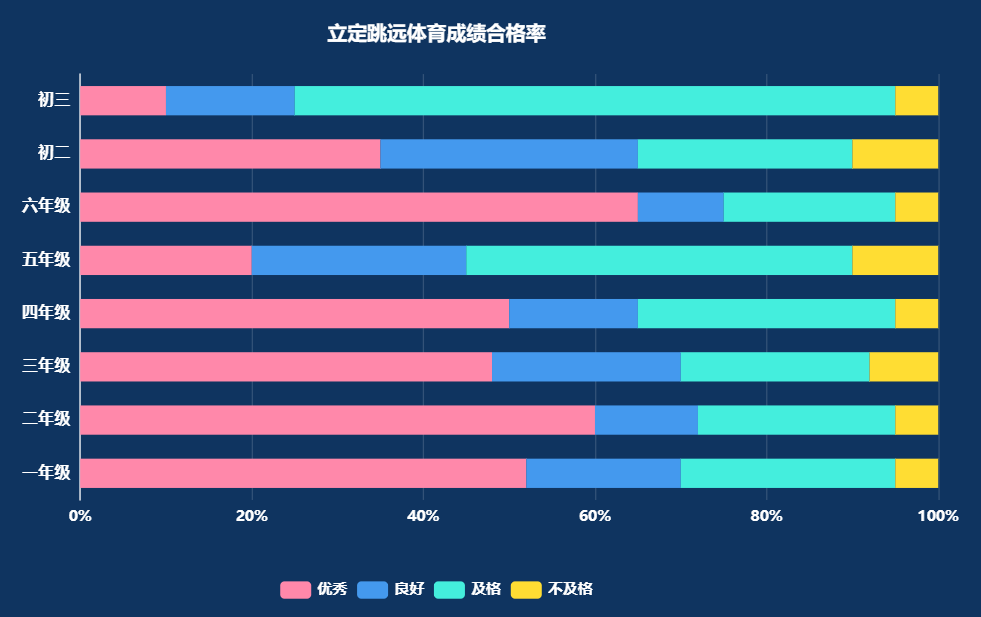

[ 图表 ] 体测项目成绩分布
顶部轮播模块：国标体测项目图标轮播
1.轮播项目池：固定为国家学生体质健康标准必测项目；
2.学校适配过滤：系统自动识别本校开设年级，仅展示本校对应年级有国标考核要求的项目，自动去重；
3.轮播交互：每 10 秒自动切换项目图标；轮播至某项目时，下方 4 个指标、图表同步刷新为该项目对应数据。
整体核心指标
1.定义：严格按照《国家学生体质健康标准（2014 年修订）》等级划分规则计算；
· 优秀率 = 优秀人数 ÷ 有效参与学生总数 ×100%
· 良好率 = 良好人数 ÷ 有效参与学生总数 ×100%
· 及格率 = 及格人数 ÷ 有效参与学生总数 ×100%
· 待提升率 = 不及格人数 ÷ 有效参与学生总数 ×100%
· 结果均保留 2 位小数。
· 待提升率 = 不及格率
2.统计数据来源：跟随用户定义的"统计数据"
2.1 统计数据==学生学期最优成绩
· 取单个学生本学期内，屏体设备采集的"有效性==有效"，该项目最优运动成绩
2.2 统计数据==最近一次国测
· 适配年级：系统自动识别该项目国标强制考核年级，仅纳入对应年级；
· 取数规则：每个年级 + 项目维度，取时间最晚、类型 = 正式国测体测的考试；
· 日常锻炼、随堂小测、模拟考不计入；
· 汇总：合并所有适配年级最新正式国测数据，按国标等级划分，计算 4 项比率；
· 多年级共用考试自动适配（如三四年级共用一场 50 米跑国测，统一取该场数据）。
2.3 统计数据==最近一次考试
· 取数规则同「最近一次国测」，不限制考试类型，所有类型考试均纳入，取每个年级项目最新一场已录入考试数据；
· 其余口径、计算规则与上一致。
项目 + 年级成绩分布（横向堆叠条形图）
1.统计口径
· 项目：跟随顶部轮播项目，与 4 个指标项目完全一致；
· 年级范围：Y 轴仅展示本校存在、且该项目为国标考核年级，非适配年级不展示；
· 数据来源：与上方 4 个指标使用完全相同的统计数据模式（学期最优 / 最近国测 / 最近考试）；
· 数值规则：每个年级内，优秀、良好、及格、待提升（不及格）占比之和 = 100%。
2.图表渲染规则
· 横轴：成绩占比（0%–100%）
· 纵轴：适配该项目的本校年级
· 系列：优秀、良好、及格、不及格
· 联动：顶部项目轮播切换、统计数据模式切换，图表与指标同步刷新
渲染描述
1.数据源
· 指标：优秀率、良好率、及格率、待提升率为必选固定渲染，不可取消；
· 图表：项目 + 年级成绩分布为用户可选，勾选则渲染，不勾选则隐藏；
· 数据跟随顶部国标项目轮播、统计数据模式切换同步刷新。
2.布局排版
· 顶部：运动图标轮播区；
· 中间数值区：横向排布 4 个必选指标卡片；
· 下方图表区：根据用户勾选自适应展示堆叠条形图；
· 整体卡片宽度：按照用户配置的宽度模式（M / N、整行）自适应占比；
· 整体卡片高度：用户手动配置高度不得小于【图标轮播区 + 必选指标高度 + 选中图表最小高度】，不足自动适配最小高度。
3.样式规范
· 图标轮播：圆形图标样式，高亮当前轮播项目；
· 指标卡片：横向均匀排布，数值下方标注指标名称；
· 堆叠条形图：按优秀 / 良好 / 及格 / 不及格固定配色；
· 整体容器内边距、卡片间距保持统一。
各项目练习次数
体测项目成绩分布


宽
高
应用
统计数据
指标
图表
运动
图标
运动
图标
运动
图标
运动
图标
运动
图标
运动
图标
运动
图标
运动
图标
运动
图标
优秀率：10.11%
良好率：10.11%
及格率：10.11%
待提升率：10.11%
